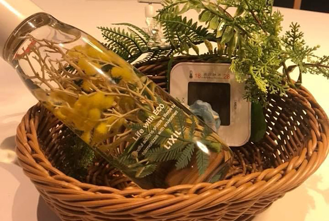
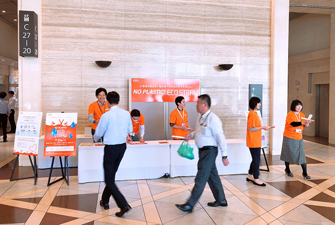

自然環境の保全
LIXILは地域の豊かな自然を守り地域社会に貢献するため、行政やNPO、森林組合などと協働し、森や里山の環境を保全するボランティア活動「森でｅこと（もりでいいこと）」に取り組んでいます。活動は三重県、茨城県、長野県の3ヵ所を拠点に、春と秋の年2回実施しています。各県で働く従業員を中心に、これまでおよそ3,800人が参加し、活動を通して地域と交流しながら身近な自然を守ることの大切さを学んでいます。
また、千葉県の野田事業所と七光台事業所では、2013年から、田んぼでの米作りを通して、多様な生き物の大切さを学ぶ「野田んぼ いきもの教室」を活動しています。
活動の狙い
LIXILのあらゆる事業活動は、自然からのさまざまな資源の供給と生態系の浄化作用・調節作用（生態系サービス）を基盤としています。私たちは、木材をはじめとする資源調達や製造場面での配慮はもちろん、自然環境への負荷を少しでも軽くするため、事業所近辺の生物多様性の場である地域の里山や森林の保全活動も行っています。
この活動は、生物多様性の維持、地球温暖化防止だけでなく、地域の水源の保全や、山崩れなどの災害防止にもつながります。こうした活動に取り組むことによって、従業員一人ひとりの地域コミュニティへの参加の推進や、社会意識の向上を図っています。
三重県での活動 「森でeこと」
三重県の活動は2008年、県が進める「企業の森」に賛同し、三重県、伊賀市と共に森林保全協定を結んだのが始まりです。県内には、上野緑工場、伊賀上野工場、名張工場、久居工場といった5つの生産拠点があります。
2015年度からは県内の森林施業認定NPO法人「森林の風（もりのかぜ）」との協働を開始し、森林保全活動の企画・技術指導を受けています。「森林の風」は荒廃する水源の森を守るため、"施業のセミプロ"を目標に2005年に設立した団体で、大手電力会社や食品会社など11社と協働で森林保全活動を行っています。
LIXILは、森林組合から2.76haの土地を借り受け、植樹、獣害防止ネットの設置の活動に、工場を中心に従業員やその家族が参加し、環境保全への意識を高めています。
三重県「企業の森」公式サイト >
森林施業認定NPO法人「森林の風」公式サイト >
森林施業 認定NPO法人 「森林の風」
代表 瀧口邦夫
 2015年度からLIXILと森林環境保全活動を共に進めています。我々は荒廃する水源の森を守るため、"施業のセミプロ"となることを目標とする団体です。
2015年度からLIXILと森林環境保全活動を共に進めています。我々は荒廃する水源の森を守るため、"施業のセミプロ"となることを目標とする団体です。
LIXILとの「森でeこと」の活動は、三重県だけではなく、大阪府の水源の森を守ることにもつながっており、活動の広がりや影響の拡大を感じます。森林環境保全活動は、草木の名前を覚えることから始まり、枝打ち、間伐など、作業は実に多岐にわたります。
人手が掛かることも多く、企業と協働することで多くの人々の手が森林に入り、短時間で作業を進めることが可能になります。また樹木や自然生態系に興味を持ってもらう機会にもなり、意義を感じています。
近年は、森に関心を持つ企業や人が増え、とてもうれしく感じています。今後も安全な活動を最優先に、共に汗をかき、共に学びながら森林の活動の中で達成感を共有したいと考えています。
茨城県での活動 「森でeこと」
 茨城県には、筑波工場をはじめ、石下工場、岩井工場、下妻工場、土浦工場、藤花工場、大和工場といった7つの生産拠点があります。
茨城県には、筑波工場をはじめ、石下工場、岩井工場、下妻工場、土浦工場、藤花工場、大和工場といった7つの生産拠点があります。
2009年、認定NPO法人｢宍塚の自然と歴史の会」（以下、「宍塚の会」）と協働し、土浦市宍塚にある里山の保全を開始しました。
「宍塚の会」は、小川、ため池、雑木林、田んぼなど、多様な環境が存在する100haほどの宍塚の里山を、未来に残す活動をしている団体で、日本ユネスコ協会連盟から「プロジェクト未来遺産」に登録されるなど、国内で高く評価されています。宍塚は、オオタカやフクロウなどの大型の鳥類やアカガエル等の両生類、小さな昆虫などが生息する豊かな自然が残る里山で、周囲には宍塚古墳群や貝塚など歴史的にも重要な場所です。
LIXILは、雑木林の下草刈りや谷戸と呼ばれる湿地の水源や水路の整備、在来種にとって脅威となる外来種の撤去など、里山保全で特に人手が必要な部分をボランティアで行っています。
認定NPO法人「宍塚の自然と歴史の会」公式サイト >
株式会社LIXILビバ
CSR推進室 大川 里志
「この里山に大切なテーマのひとつは水源の保全、里山にはそれぞれのテーマに合った活動がある」というNPO法人の方の言葉が印象に残っています。
私の所属は「CSR推進室」、CO2削減や地域コミュニケーションのひとつ「地域の皆さまとの対話」などを担当しています。この活動を通じて、それぞれの地域やお客さまに応じて、多様な対話のテーマがあっていいことを学んできました。その経験から、生物多様性の維持、地球温暖化防止という視点だけではなく、より具体的にこの里山のテーマは何か。活動にどれだけの人がどのように参画できるのか。といった切り口でも、活動を捉えています。そして、店舗において地域との持続的な関係を構築できるのと同様に、森でeことを通して、より深く地域に入っていければと考えます。
まだ2回目の参加で、わからないことも多いですが、里山保全と同時に、会社の枠を超えたコミュニケーションも一緒に追究したいと思います。
長野県での活動 「森でeこと」
長野県では｢森林の里親促進事業｣に参加し、2009年から下伊那郡阿智村で森林保全活動を行っています。約16haの森を借り受け、間伐、整理伐を実施し、1,400mにわたって作業道を完成させました。作業道をメンテナンスしたり、間伐や炭原木の切り出しを行うなど、森林整備を中心に活動を継続しています。
長野県「森林（もり）の里親促進事業」公式サイト >
千葉県での活動 「野田んぼ いきもの教室」
千葉県にある野田事業所と七光台事業所では、田んぼでの米作りを通して、多様な生き物の大切さを学ぶ「野田んぼ いきもの教室」を、千葉県野田市の水田型市民農園（野田市江川地区）で2013年度から活動しています。
野田市は、国の特別天然記念物「コウノトリ」の野生復帰を目指して、2012年12月に多摩動物公園からコウノトリのつがいを無償で譲り受け、市民農園に併設する施設で飼育を開始しました。2015年より3年連続合計6羽を試験放鳥しており北は東北、西は四国まで飛んで行っています。
コウノトリが暮らしていくためには、イトミミズ、カエル、ヘビ、ドジョウといった多様な生き物が育つ環境が必要です。「野田んぼ いきもの教室」では、多様な生物の棲み家となる減農薬の田んぼで米作りし、生物多様性維持の大切さを学んでいます。
2016年度は4月の田植えから始まり、草刈りや自然観察会、ホタル観察会、稲刈りまで、全6回、従業員やその家族を合わせ13家族延べ161人が参加しました。
2017年度は20家族で活動を継続しています。2017年6月には、従業員とその家族の35名が、田んぼに棲むオタマジャクシやヤゴ、トンボを探しながら草取りをしたり、網を持って用水にいるトジョウなどの生き物を観察しました。田んぼ作業が生き物の生息環境の整備につながり、人間も生き物と共生、共存していることを実感しました。
LIXILは、自然に親しみ、森や木を育む気持ちや活動継続の大切さを、次世代へ伝えています。参加を機に、環境問題や社会貢献活動に興味を抱き、活動を始める従業員も現れています。何年もかけて育つ樹木のように、長く将来にわたって実を結び続けることを目指して、一つ一つの活動を積み重ねてまいります。
「森でeこと」の最近の活動について
ニュースリリースも合わせてご覧ください。